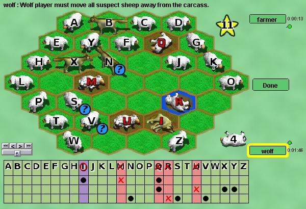

Мутон
Mutton is a deductive game for two players. One player
plays as wolves who disguise themselves as sheep in order to
eat as many sheep as they can. The other player is the
farmer who tries to kill the wolves before they eat too many
sheep.
The full rules are available here
Only one round is played in this version. The first
player sets up the board and decides how many dead sheep the
wolf player needs to cause in order to win. The second
player then chooses to play as the wolf or the farmer.
The farmer player wins if he can shoot all 4 wolves before
the targeted number of sheep are killed (either by being
eaten by the wolf or shot by the farmer.) The wolf player
wins if the targeted number of sheep are killed before all 4
wolves are killed.
If you prefer to turn off the score sheet and keep score
yourself, printable
score
sheets are available at Cameron Brownes site.
Боты: Dumbbot
currently chooses randomly from valid moves and is fairly
easy to beat.
|

|
Inventor Credits:
Mutton was created by Cameron Browne & Stephen
Tavener. |
Programmer Credit:
The Mutton implementation at Boardspace was created
primarily by Richard Walter (rwalter42 here). It's his
first contribution here, but I hope not his last! |
Artwork Credits:
- Sheep & wolf images drawn by Reiner "Tiles"
Prokein and were downloaded from his website at
http://reinerstileset.4players.de They are
specifically licensed as freeware for others to use.
- Yellow star where farmer chooses target score drawn by
ensarija and is available from http://openclipart.org/
and is in the public domain.
|
Sound Credits
Sounds are created from sound files downloaded from the free
sound project at http://www.freesound.org
- Sheep bleat by Erdie (Sheep.flac)
- Wollf howl by Robinhood76 (00829 wolf howl one
shot.wav)
- Eating sound by gabemiller74 (WereWolfM2.aif)
- Gun shot by fastson (RemingtonGunshot.wav)
- Pickup sound by FreqMan (garbage bag (3).wav)
|